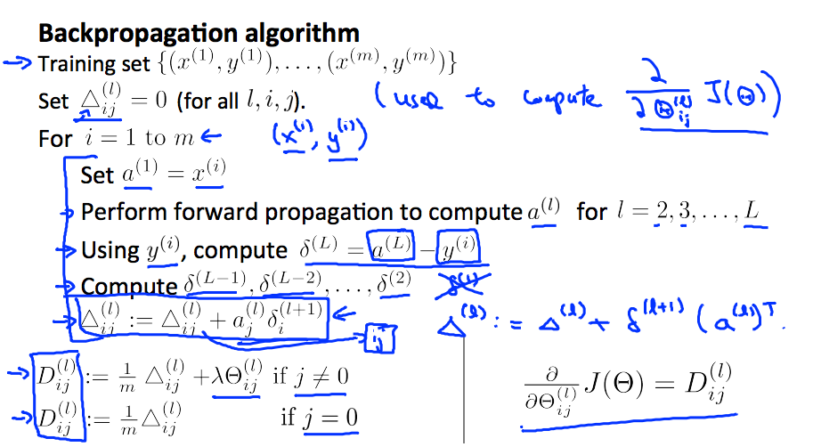
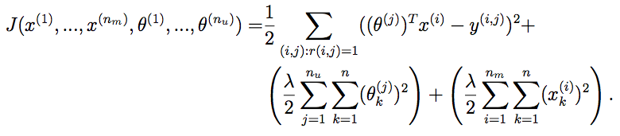
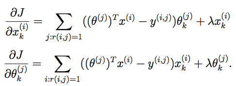

ml-class
Table of Contents
1 ml-class
1.1 definition
T(task),E(experience),P(performance)
1.2 prerequisite
- linear algebra
- matrices / vectors # addition / subtraction/ multiplication / inversion / transposition
- some matrices are not invertible called singular / degenerate # redundant(linear dependent) or too many features
- pseudo inverse(pinv, works on matrix non-invertible) and inverse(inv)
- Octave # todo(dirlt)
1.3 supervised learning
- http://math.stackexchange.com/questions/141381/regression-vs-classification
- regression # continuous valued output.
- squared error function (as cost function)
- linear regression
- polynomial regression
- classification # discrete valued output.
- decision boundary
- binary-class(negative/positive) vs. multi-class
- logistic regression # h(x) in [0,1]
- sigmoid / logistic function
- g(x) = 1 / (1 + e^-x)
- interpretation of hypothesis output.
- p(y=0|x;theta) + p(y=1|x;theta) = 1 (for binary-class)
- cost funciton = [-log(h(x)) if y = 1, -log(1-h(x)) if y = 0]
- => -(log(h(x)) * y + log(1-h(x)) * (1-y))
- SVM(support vector machine)
- training set / historical data set.
- input variables / features
- univariate # single input variable
- multivariate # multiple input variables.
- feature scaling / mean normalization
- output variables / targets
- feature scaling (otherwise more steps to find global minimum), approximately [-1,1]
- input variables / features
- hypothesis parameters(theta) and hypothesis(theta * x)
- cost function
- convex and non-convex function
- "batch" = uses all training set
- gradient descent algorithm
- learning rate, derivative term.
- if learning rate is too small, converge rate could be low.
- if learning rate is too large, fail to converge or even diverge.
- gradient checking
- optimization algorithm: conjugate gradient / BFGS / L-BFGS
- no need to manually peek learning rate
- faster than gradient descent
- provided cost function and partial derivatives
- 'fmincg' or 'fminunc' in Octave
- overfitting
- problem
- if underfit -> high bias
- if overfit -> high variance
- not generalize new examples
- addressing
- reduce number of features.
- manually select which features to keep
- model selection algorithm
- regularization
- keep all features but reduce magnitude/values of parameters
- works well when we have a lot of features
- if regularization parameter is very large -> underfitting.
- reduce number of features.
- problem
1.4 neural networks
- Andrew Ng's Lecture PDF
- motivation
- complex non-linear classification / hypothesis
- many features -> too many polynomial terms.
- quantic x, then O(n^x).
- quadratic : O(n ^ 2)
- cubic: O(n ^ 3)
- background
- origins: algorithms that try to mimic the brain
- widely used in 80s and early 90s, popularity diminished in late 90s
- recent resurgence
- "one learning algorithm" hypothesis = cortex.
- model representation
- neuron in the brain
- dendrite = input write
- axon = output write
- cell body / nucleus
- communicated by spike(pulse of electricity)
- neuron model: logistic unit
- sigmoid (logistic) activation function
- hypothesis parameter = weight
- layer: input/output/hidden
- a(i,j) = "activation" of unit i in layer j
- theta(j) = matrix of weights controlling function mapping from layer j to layer j+1
- if network has s(j) units in layer j, and s(j+1) units in layer j+1, then theta(j) is M(s(j+1), s(j)+1)
- forward propagation
- backward propagation
- neuron in the brain
- backpropagation algorithm
- general cost function
- delta(j,l) = "error" of node j in layer l
- intuition # use backpropagation algorithm to compute derivatives.
- implementation
- unroll parameters
- gradient checking(inefficient) to verify backprop derivatives
- initialize parameters randomly[symmetry breaking] (otherwise features are duplicated)
- putting together
- network architecture
- no. of input units: dimension of features
- no. of output units: number of classes
- hidden layer
- reasonable default: 1 hidden layer, or >1 hidden layer have same no. of hidden units in every layer(usually the more the better)
- no. of hidden units = [2,3,4] * no. input units.
- network size
- small # fewer parameters, more prone to underfitting, computationally cheaper.
- large # more parameters, more prone to overfitting, computationally more expensive.
- training a neural network
- randomly initialize weights
- for-loop to iterate each training samples.
- forward propagation to compute activation
- compute cost function
- backward propagation to compute partial derivatives
- gradient checking
- gradient descent algorithm
- network architecture
1.5 support vector machine
- alternative view of logistic regression
- SVM cost function # replace sigmoid function with two simple functions (cost0 and cost1)
- cost function = -y * cost1(tx) + (1-y) * cost0(tx)
- hypothesis: y = 1 if tx >=0. y = 0 otherwise.
- SVM decision boundary / large margin intuition (if C very large)
- kernel / kernel function
- for more features
- to compute similarity (with landmarks) as more complex, non-linear features.
- gaussian kernel function.
- K(x,y,e) = exp ^ (-0.5 / e^2 * |x-y|^2)
- if e^2 is large, high bias and low variance
- if e^2 is small, low bias and high variance
- output range [0,1]
- how it works
- choose typical landmarks.
- compute similarity with landmarks as input [0,1]
- translate into a typical classifier problem.
- number of features == number of landmarks.
- practice
- liblinear, libsvm
- specify 1) choice of parameter C 2) kernel function
- no kernel / linear kernel function # n >> m
- gaussian kernel function # m >> n
- polynomial kernel function
- string kernel / chi-square kernel / histogram intersection kernel
1.6 advice for applying ML
- unacceptablely large errors in its predictions
- don't just use gut feelings and do the following things randomly
- get more training examples. (but not the more the better) => fix high variance
- try smaller sets of features. => fix high variance
- try getting additional features. => fix high bias
- try polynomial features. => fix high bias
- try decreasing/increasing lambda. => fix high bias/variance
- system diagnostics
- evaluating hypothesis
- split examples randomly into training set(70%) and test set(30%).
- see J_test(theta) is overfitting or not.
- model selection (for choosing polynomial terms and regularization)
- split examples randomly into training set(60%), cross validation set(20%), and test set(20%)
- use cross validation set to select model, and get estimate of generalization error.
- high bias vs. variance
- bias => underfit: J_train(theta) is high, J_cv/test(theta) = J_train(theta)
- variance => overfit: J_train(theta) is low, but J_cv/test(theta) > J_train(theta)
- learnin curves # J_cv/test(theta) and J_train(theta) over training set size
- if suffers from high bias, more training data will not help
- if suffers from high variance, more training data might help
- evaluating hypothesis
- numerical evaluation # a real number tells how well is your system.
- error analysis # spot any systematic trend in what type of examples it is making errors on
- skewed classes.
- y = 1 in presence of rare class
- precision = true positive / [no. of predicted positive = (true pos + false pos)]
- recall = true positive / [no. of actual positive = (true pos + false neg)]
- good classifier: precision and recall are both high enough.
- but there are tradeoffs between both
- F score = 2 * P * R / (P + R)
- note: see "anomaly detection select threshold" how to compute P,R, and F.
- large data rationale
- assume features have sufficient information to predicate accurately
- useful test: give the input x, can a human expert confidently predict y?
1.7 unsupervised learning
- cluster algorithm
- cocktail party problem
- K-means algorithm
- cluster centroid
- K = cluster number, k = cluster index
- should have K < m
- choose K manually(most time) or with elbow method
- objective function = distances between training set and centroids.
- convex, but risk of local optima
- randomly choose centroids from training set.
- multiple random initialization
1.8 dimensionality reduction
- motivation
- data compression
- data visualization
- speed up learning algorithm
- PCA(principal component analysis)
- find k vectors onto which to project the data
- minimize the projection error(different to linear regression)
- algorithm # reduce n dimensions to k dimensions
- sigma = 1/m * sum{X(i) * X(i)'}. X(i)~n*1, so sigma~n*n
- [U,S,V] = svd(sigma) # singular value decomposition
- U~n*n. use first k columns called U_reduce~(n*k)
- z = U_reduce' * X(i) ~ (k * n * n * 1) = (k*1)
- reconstruct: X_approx(i) = U_reduce * z ~ (n * k * k * 1) = (n*1)
- choose k # n% of variance is retained.
- n = sum{i=1,k}Sii / sum{i=1,n}Sii (S from svd, diagonal matrix)
- n = 99 typical value
- comments
- don't use PCA to prevent overfitting
- use raw data first, then consider PCA
1.9 anomaly detection
- gaussian distribution
- X ~ N(u, e^2) # X distributed as N. where mean = u, variance = e^2
- p(x, u, e^2) = 1 / ((sqrt(2 * pi) * e)) * exp ^ { - (x-u)^2 / (2 * e^2) } # probability
- multivariate version
- to capture anomalous combination of values. computationally expensive.
- u~{n*1}, e~{n*n} (covariance matrix) # intuition. contour not axis aligned.
- p(x, u, e) = 1 / ((2 * pi) ^ (n/2) * sqrt(det(e))) * exp ^ {-0.5 * (x-u)' * e^-1 * (x-u)}
- u = 1/m * sum{x}, e = 1/m * sum{(x-u) * (x-u)'}
- note: m > n, otherwise e is non-invertible.
- how it works
- model p(x) from data
- p(x) < epsilon to decide if anomalous
- epsilon # p(x) is comparable for normal and anomalous examples.
- features to distinguish normal and anomalous examples.
- p(x) = p1(x1, u1, e1^2) * … pj(xj, uj, ej^2).. # j = # of features.
- if xj is not gaussian feature, transform it to fit into gaussian distribution.
- vs. supervised learning
- anomaly detection
- # of positive cases is very small, while # of negative cases is very large
- many different types of "anomaly", hard to learn from positive cases what anomalies looks like
- future anomalies maybe very different to current ones.
- fraud detection, manufacturing, monitoring machines.
- supervised learning
- # of positive cases and negative cases are both very large
- enough positive cases to learn what positive cases look like
- future positive cases are similar to current ones.
- email spam, weather prediction, cancer classification.
- anomaly detection
1.10 recommender system
- content based recommendation
- collaborative filtering algorithm
- low rank matrix factorization
- random initialization to break symmetry
- content features to compute similarity between items
- mean normalization # assign mean value to null
1.11 ML in large scale
- stochastic gradient descent algorithm
- vs. batch gradient descent
- randomly shuffle dataset
- repeat for i = 1..m { for j = 0..n { update theta_j only use ith data } }
- move to global minimum generally, but not always in one iteration.
- convergence checking
- use averaged last k(say 1000) examples.
- the larger k, the smoother cost function curve.
- can slowly decrease learning rate over time for convergence.
- mini-batch gradient descent algorithm
- between batch and stochastic gradient descent
- use b(say 10) examples in one iteration
- take advantage of vectorization
- online learning
- map-reduce and data parallelism
- more data
- collect from multiple sources
- artificial data synthesis
- ceiling analysis
1.12 appendix code
1.12.1 feature normalization
function [X_norm, mu, sigma] = featureNormalize(X) %FEATURENORMALIZE Normalizes the features in X % FEATURENORMALIZE(X) returns a normalized version of X where % the mean value of each feature is 0 and the standard deviation % is 1. This is often a good preprocessing step to do when % working with learning algorithms. mu = mean(X); X_norm = bsxfun(@minus, X, mu); sigma = std(X_norm); X_norm = bsxfun(@rdivide, X_norm, sigma); % ============================================================ end
1.12.2 linear regression cost function
note(dirlt): works for polynomial regression too.
function [J, grad] = linearRegCostFunction(X, y, theta, lambda) %LINEARREGCOSTFUNCTION Compute cost and gradient for regularized linear %regression with multiple variables % [J, grad] = LINEARREGCOSTFUNCTION(X, y, theta, lambda) computes the % cost of using theta as the parameter for linear regression to fit the % data points in X and y. Returns the cost in J and the gradient in grad % Initialize some useful values m = length(y); % number of training examples % You need to return the following variables correctly J = 0; grad = zeros(size(theta)); % ====================== YOUR CODE HERE ====================== % Instructions: Compute the cost and gradient of regularized linear % regression for a particular choice of theta. % % You should set J to the cost and grad to the gradient. % diff = X * theta - y; J = sum(diff .^ 2) * 0.5 / m; t = theta; t(1) = 0; J += sum(t .^ 2) * lambda * 0.5 / m; grad = ((X' * diff) + lambda * t) / m; % ========================================================================= grad = grad(:); end
1.12.3 neural network cost function


function [J grad] = nnCostFunction(nn_params, ...
input_layer_size, ...
hidden_layer_size, ...
num_labels, ...
X, y, lambda)
%NNCOSTFUNCTION Implements the neural network cost function for a two layer
%neural network which performs classification
% [J grad] = NNCOSTFUNCTON(nn_params, hidden_layer_size, num_labels, ...
% X, y, lambda) computes the cost and gradient of the neural network. The
% parameters for the neural network are "unrolled" into the vector
% nn_params and need to be converted back into the weight matrices.
%
% The returned parameter grad should be a "unrolled" vector of the
% partial derivatives of the neural network.
%
% Reshape nn_params back into the parameters Theta1 and Theta2, the weight matrices
% for our 2 layer neural network
Theta1 = reshape(nn_params(1:hidden_layer_size * (input_layer_size + 1)), ...
hidden_layer_size, (input_layer_size + 1));
Theta2 = reshape(nn_params((1 + (hidden_layer_size * (input_layer_size + 1))):end), ...
num_labels, (hidden_layer_size + 1));
% Setup some useful variables
m = size(X, 1);
% You need to return the following variables correctly
J = 0;
Theta1_grad = zeros(size(Theta1));
Theta2_grad = zeros(size(Theta2));
% ====================== YOUR CODE HERE ======================
% Instructions: You should complete the code by working through the
% following parts.
%
% Part 1: Feedforward the neural network and return the cost in the
% variable J. After implementing Part 1, you can verify that your
% cost function computation is correct by verifying the cost
% computed in ex4.m
%
% Part 2: Implement the backpropagation algorithm to compute the gradients
% Theta1_grad and Theta2_grad. You should return the partial derivatives of
% the cost function with respect to Theta1 and Theta2 in Theta1_grad and
% Theta2_grad, respectively. After implementing Part 2, you can check
% that your implementation is correct by running checkNNGradients
%
% Note: The vector y passed into the function is a vector of labels
% containing values from 1..K. You need to map this vector into a
% binary vector of 1's and 0's to be used with the neural network
% cost function.
%
% Hint: We recommend implementing backpropagation using a for-loop
% over the training examples if you are implementing it for the
% first time.
%
% Part 3: Implement regularization with the cost function and gradients.
%
% Hint: You can implement this around the code for
% backpropagation. That is, you can compute the gradients for
% the regularization separately and then add them to Theta1_grad
% and Theta2_grad from Part 2.
%
X2 = [ones(m, 1) X];
tx2 = X2 * Theta1';
hx2 = sigmoid(tx2);
X3 = [ones(m, 1) hx2];
tx3 = X3 * Theta2';
hx3 = sigmoid(tx3);
hy = zeros(m, num_labels);
for i = [1:m],
hy(i, y(i)) = 1;
end;
J = sum(sum(log(hx3) .* (-hy) - log(1 - hx3) .* (1 - hy))) / m;
R = 0;
R += sum(sum(Theta1(:, 2:end) .^ 2));
R += sum(sum(Theta2(:, 2:end) .^ 2));
R *= lambda / m * 0.5;
J += R;
% -------------------------------------------------------------
d3 = hx3 - hy; # M * K
d2 = (d3 * Theta2)(:,2:end) .* sigmoidGradient(tx2); # M * H
Theta2_grad = d3' * X3 / m; # K * M * M * (H+1) = K * (H+1)
Theta1_grad = d2' * X2 / m; # H * M * M * (N+1) = H * (N+1)
t2 = Theta2;
t2(:,1) = 0;
t1 = Theta1;
t1(:,1) = 0;
Theta2_grad += t2 * lambda / m;
Theta1_grad += t1 * lambda / m;
% =========================================================================
% Unroll gradients
grad = [Theta1_grad(:) ; Theta2_grad(:)];
end
1.12.4 pca(principal compoenent analysis)
function [U, S] = pca(X)
%PCA Run principal component analysis on the dataset X
% [U, S, X] = pca(X) computes eigenvectors of the covariance matrix of X
% Returns the eigenvectors U, the eigenvalues (on diagonal) in S
%
% Useful values
[m, n] = size(X);
% You need to return the following variables correctly.
U = zeros(n);
S = zeros(n);
% ====================== YOUR CODE HERE ======================
% Instructions: You should first compute the covariance matrix. Then, you
% should use the "svd" function to compute the eigenvectors
% and eigenvalues of the covariance matrix.
%
% Note: When computing the covariance matrix, remember to divide by m (the
% number of examples).
%
sigma = 1.0 / m * X' * X;
[U,S,_ ] = svd(sigma);
% =========================================================================
end
projectData
function Z = projectData(X, U, K) %PROJECTDATA Computes the reduced data representation when projecting only %on to the top k eigenvectors % Z = projectData(X, U, K) computes the projection of % the normalized inputs X into the reduced dimensional space spanned by % the first K columns of U. It returns the projected examples in Z. % % You need to return the following variables correctly. Z = zeros(size(X, 1), K); % ====================== YOUR CODE HERE ====================== % Instructions: Compute the projection of the data using only the top K % eigenvectors in U (first K columns). % For the i-th example X(i,:), the projection on to the k-th % eigenvector is given as follows: % x = X(i, :)'; % projection_k = x' * U(:, k); % U_reduce = U(:, 1:K); Z = X * U_reduce; % ============================================================= end
recoverData
function X_rec = recoverData(Z, U, K) %RECOVERDATA Recovers an approximation of the original data when using the %projected data % X_rec = RECOVERDATA(Z, U, K) recovers an approximation the % original data that has been reduced to K dimensions. It returns the % approximate reconstruction in X_rec. % % You need to return the following variables correctly. X_rec = zeros(size(Z, 1), size(U, 1)); % ====================== YOUR CODE HERE ====================== % Instructions: Compute the approximation of the data by projecting back % onto the original space using the top K eigenvectors in U. % % For the i-th example Z(i,:), the (approximate) % recovered data for dimension j is given as follows: % v = Z(i, :)'; % recovered_j = v' * U(j, 1:K)'; % % Notice that U(j, 1:K) is a row vector. % U_reduce = U(:, 1:K); X_rec = Z * U_reduce'; % ============================================================= end
1.12.5 gaussian distribution
compute mean and variance of X
function [mu sigma2] = estimateGaussian(X) %ESTIMATEGAUSSIAN This function estimates the parameters of a %Gaussian distribution using the data in X % [mu sigma2] = estimateGaussian(X), % The input X is the dataset with each n-dimensional data point in one row % The output is an n-dimensional vector mu, the mean of the data set % and the variances sigma^2, an n x 1 vector % % Useful variables [m, n] = size(X); % You should return these values correctly mu = zeros(n, 1); sigma2 = zeros(n, 1); % ====================== YOUR CODE HERE ====================== % Instructions: Compute the mean of the data and the variances % In particular, mu(i) should contain the mean of % the data for the i-th feature and sigma2(i) % should contain variance of the i-th feature. % mu = mean(X)'; # xu = X - mu'; # sigma2 = 1.0 / m * sum(xu .^ 2)'; sigma2 = (m-1) / m * var(X)'; % ============================================================= end
compute probability
function p = multivariateGaussian(X, mu, Sigma2)
%MULTIVARIATEGAUSSIAN Computes the probability density function of the
%multivariate gaussian distribution.
% p = MULTIVARIATEGAUSSIAN(X, mu, Sigma2) Computes the probability
% density function of the examples X under the multivariate gaussian
% distribution with parameters mu and Sigma2. If Sigma2 is a matrix, it is
% treated as the covariance matrix. If Sigma2 is a vector, it is treated
% as the \sigma^2 values of the variances in each dimension (a diagonal
% covariance matrix)
%
k = length(mu);
if (size(Sigma2, 2) == 1) || (size(Sigma2, 1) == 1)
Sigma2 = diag(Sigma2);
end
X = bsxfun(@minus, X, mu(:)');
p = (2 * pi) ^ (- k / 2) * det(Sigma2) ^ (-0.5) * ...
exp(-0.5 * sum(bsxfun(@times, X * pinv(Sigma2), X), 2));
end
1.12.6 anomaly detection select threshold
function [bestEpsilon bestF1] = selectThreshold(yval, pval)
%SELECTTHRESHOLD Find the best threshold (epsilon) to use for selecting
%outliers
% [bestEpsilon bestF1] = SELECTTHRESHOLD(yval, pval) finds the best
% threshold to use for selecting outliers based on the results from a
% validation set (pval) and the ground truth (yval).
%
bestEpsilon = 0;
bestF1 = 0;
F1 = 0;
stepsize = (max(pval) - min(pval)) / 1000;
for epsilon = min(pval):stepsize:max(pval)
% ====================== YOUR CODE HERE ======================
% Instructions: Compute the F1 score of choosing epsilon as the
% threshold and place the value in F1. The code at the
% end of the loop will compare the F1 score for this
% choice of epsilon and set it to be the best epsilon if
% it is better than the current choice of epsilon.
%
% Note: You can use predictions = (pval < epsilon) to get a binary vector
% of 0's and 1's of the outlier predictions
cv_pred = pval < epsilon;
tp = sum((cv_pred == 1) & (yval == 1));
fp = sum((cv_pred == 1) & (yval == 0));
fn = sum((cv_pred == 0) & (yval == 1));
prec = tp / (tp + fp);
recall = tp / (tp + fn);
F1 = 2 * prec * recall / (prec + recall);
% =============================================================
if F1 > bestF1
bestF1 = F1;
bestEpsilon = epsilon;
end
end
end
1.12.7 collaborative filtering cost function


function [J, grad] = cofiCostFunc(params, Y, R, num_users, num_movies, ...
num_features, lambda)
%COFICOSTFUNC Collaborative filtering cost function
% [J, grad] = COFICOSTFUNC(params, Y, R, num_users, num_movies, ...
% num_features, lambda) returns the cost and gradient for the
% collaborative filtering problem.
%
% Unfold the U and W matrices from params
X = reshape(params(1:num_movies*num_features), num_movies, num_features);
Theta = reshape(params(num_movies*num_features+1:end), ...
num_users, num_features);
% You need to return the following values correctly
J = 0;
X_grad = zeros(size(X));
Theta_grad = zeros(size(Theta));
% ====================== YOUR CODE HERE ======================
% Instructions: Compute the cost function and gradient for collaborative
% filtering. Concretely, you should first implement the cost
% function (without regularization) and make sure it is
% matches our costs. After that, you should implement the
% gradient and use the checkCostFunction routine to check
% that the gradient is correct. Finally, you should implement
% regularization.
%
% Notes: X - num_movies x num_features matrix of movie features
% Theta - num_users x num_features matrix of user features
% Y - num_movies x num_users matrix of user ratings of movies
% R - num_movies x num_users matrix, where R(i, j) = 1 if the
% i-th movie was rated by the j-th user
%
% You should set the following variables correctly:
%
% X_grad - num_movies x num_features matrix, containing the
% partial derivatives w.r.t. to each element of X
% Theta_grad - num_users x num_features matrix, containing the
% partial derivatives w.r.t. to each element of Theta
%
xt = X * Theta'; % m * n * n * u = m * u
df = (xt- Y) .* R; % m * u
J = 0.5 * sum(sum(df .^ 2));
J += 0.5 * lambda * (sum(sum(Theta .^ 2)) + sum(sum(X .^ 2)));
X_grad = df * Theta; % m * u * u * n = m * n;
X_grad += lambda * X;
Theta_grad = df' * X; % u * m * m * n = u * n;
Theta_grad += lambda * Theta;
% =============================================================
grad = [X_grad(:); Theta_grad(:)];
end